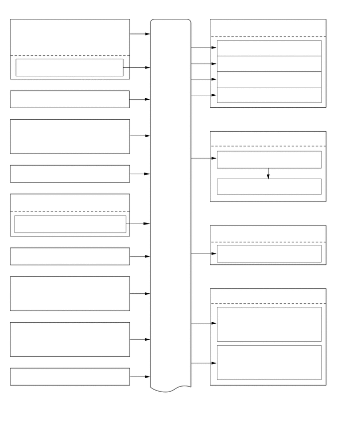

0.594,0.552 2.813,1.021
2.219,0.469
10
false
质量空气流量计分总成
3.406,4.146 3.865,4.344
0.458,0.198
10
false
ECM
0.719,1.302 5.156,1.5
4.438,0.198
10
false
进气温度传感器
0.698,1.927 3.906,2.125
3.208,0.198
10
false
曲轴位置传感器
0.552,2.615 2.813,3.083
2.26,0.469
10
false
发动机冷却液温度传感器
0.615,3.51 3.375,3.771
2.76,0.26
10
false
加速踏板传感器总成
0.677,4.094 2.25,4.323
1.573,0.229
10
false
节气门体总成
0.677,4.573 2.219,4.823
1.542,0.25
10
false
节气门位置传感器
0.698,5.208 3.76,5.406
3.063,0.198
10
false
爆震控制传感器
0.25,5.833 2.667,6.385
2.417,0.552
10
false
凸轮轴位置传感器（进气凸轮轴）
0.271,6.802 2.656,7.292
2.385,0.49
10
false
凸轮轴位置传感器（排气凸轮轴）
0.688,7.729 4.667,7.927
3.979,0.198
10
false
刹车灯开关总成
5.406,0.427 5.865,0.625
0.458,0.198
10
false
SFI
4.698,0.854 6.531,1.167
1.833,0.313
10
false
1 号喷油器总成
4.698,1.177 6.531,1.49
1.833,0.313
10
false
2 号喷油器总成
4.698,1.531 6.531,1.844
1.833,0.313
10
false
3 号喷油器总成
4.698,1.865 6.531,2.177
1.833,0.313
10
false
4 号喷油器总成
5.417,2.771 5.875,2.969
0.458,0.198
10
false
ESA
4.99,3.188 6.427,3.427
1.438,0.24
10
false
点火线圈总成
5.406,3.771 6.26,4.01
0.854,0.24
10
false
火花塞
5.365,4.729 6.281,4.927
0.917,0.198
10
false
ETCS-i
4.885,5.146 6.344,5.406
1.458,0.26
10
false
节气门控制马达
5.24,6.031 6.021,6.229
0.781,0.198
10
false
双 VVT-i
4.583,6.427 6.219,6.896
1.635,0.469
10
false
凸轮轴正时机油控制阀总成 （进气凸轮轴）
4.563,7.208 6.198,7.688
1.635,0.479
10
false
凸轮轴正时机油控制阀总成 （排气凸轮轴）